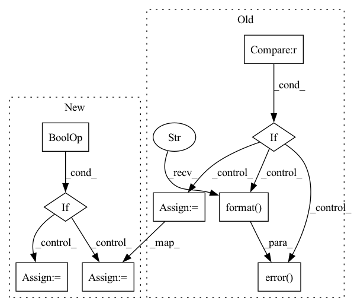

Pattern ID :27877
Before Change
ret_code, out, err = ClientConstants.get_console_pipe_out_err_results(process)
if out is not None:
out_str = out.decode(encoding="utf-8")
if str(out_str).find(FedMLClientRunner.FEDML_BOOTSTRAP_RUN_OK) == -1 \
and str(out_str).lstrip(" ").rstrip(" ") != "":
logging.error("{}".format( out_str) )
is_bootstrap_run_ok = False
else:
logging.info("{}".format(out_str))
if err is not None:After Change
process = ClientConstants.exec_console_with_script(bootstrap_scripts, should_capture_stdout=True,
should_capture_stderr=True)
ret_code, out, err = ClientConstants.get_console_pipe_out_err_results(process)
if ret_code is None or ret_code == 0 :
out_str = out.decode(encoding="utf-8")
if out_str != "":
logging.info("{}".format(out_str))
sys_utils.log_return_info(bootstrap_script_file, ret_code)
is_bootstrap_run_ok = True
else:
if err is not None:
err_str = err.decode(encoding="utf-8")
if err_str != "":
logging.error("{}".format(err_str))
sys_utils.log_return_info(bootstrap_script_file, ret_code)
is_bootstrap_run_ok = False
except Exception as e:
logging.error("Bootstrap script error: {}".format(traceback.format_exc()))
is_bootstrap_run_ok = FalseIn pattern: SUPERPATTERN
Frequency: 3
Non-data size: 9
Instances Fragment ID: 82810936
Project Name: fedml-ai/fedml
Commit Name: 55b530e94f5d447a7a3133fc6ec3727630360034
Time: 2023-02-08
Author: alexliang.kh@gmail.com
File Name: python/fedml/cli/edge_deployment/client_runner.py
M Class Name: FedMLClientRunner
N Class Name: FedMLClientRunner
M Method Name: build_dynamic_args(4)
N Method Name: build_dynamic_args(4)
M Parent Class:
N Parent Class:
M File Name: python/fedml/cli/edge_deployment/client_runner.py
N File Name: python/fedml/cli/edge_deployment/client_runner.py
M Start Line: 272
M End Line: 288
N Start Line: 238
N End Line: 289
Before Change
ret_code, out, err = ClientConstants.get_console_pipe_out_err_results(process)
if out is not None:
out_str = out.decode(encoding="utf-8")
if str(out_str).find(FedMLClientRunner.FEDML_BOOTSTRAP_RUN_OK) == -1 \
and str(out_str).lstrip(" ").rstrip(" ") != "" :
logging.error("{}".format( out_str) )
is_bootstrap_run_ok = False
else:
logging.info("{}".format(out_str))
if err is not None:After Change
process = ClientConstants.exec_console_with_script(bootstrap_scripts, should_capture_stdout=True,
should_capture_stderr=True)
ret_code, out, err = ClientConstants.get_console_pipe_out_err_results(process)
if ret_code is None or ret_code == 0 :
out_str = out.decode(encoding="utf-8")
if out_str != "":
logging.info("{}".format(out_str))
sys_utils.log_return_info(bootstrap_script_file, ret_code)
is_bootstrap_run_ok = True
else:
if err is not None:
err_str = err.decode(encoding="utf-8")
if err_str != "":
logging.error("{}".format(err_str))
sys_utils.log_return_info(bootstrap_script_file, ret_code)
is_bootstrap_run_ok = False
except Exception as e:
logging.error("Bootstrap script error: {}".format(traceback.format_exc()))
is_bootstrap_run_ok = False Fragment ID: 82810935
Project Name: fedml-ai/fedml
Commit Name: c4d450d5441e5b910b39e5ff1758d3787848cf66
Time: 2023-02-08
Author: alex.gpt.llm@gmail.com
File Name: python/fedml/cli/edge_deployment/client_runner.py
M Class Name: FedMLClientRunner
N Class Name: FedMLClientRunner
M Method Name: build_dynamic_args(4)
N Method Name: build_dynamic_args(4)
M Parent Class:
N Parent Class:
M File Name: python/fedml/cli/edge_deployment/client_runner.py
N File Name: python/fedml/cli/edge_deployment/client_runner.py
M Start Line: 272
M End Line: 288
N Start Line: 238
N End Line: 289
Before Change
)
)
else:
if hub_modelID is None :
logger.error(
"Requested file {} does not exists locally. It can be downloaded from HuggingFace ModelHub using "hub_modelID" argument".format(
filename
)
)
raise FileNotFoundError
os.makedirs(local_path, exist_ok=True)
url = huggingface_hub.hf_hub_url(hub_modelID, filename)
logger.info(
"Downloading requested file {} from {}.".format(filename, url)
)
fetched_file = huggingface_hub.cached_download(
url, cache_dir=local_path, **download_kwargs
)
After Change
savedir.mkdir(exist_ok=True)
sourcefile = f"{source}/{filename}"
destination = savedir / filename
if source.startswith("http://") or source.startswith("https://") :
// Interpret source as web address.
// Download
try:
urllib.request.urlretrieve(sourcefile, destination)
except urllib.error.URLError:
raise ValueError(
f"Interpreted {source} as web address, but could not download."
)
elif pathlib.Path(source).is_dir():
// Interpret source as local directory path
// Just symlink
sourcepath = pathlib.Path(sourcefile).absolute()
destination.unlink(missing_ok=True)
destination.symlink_to(sourcepath)
else:
// Interpret source as huggingface hub ID
// Use huggingface hub"s fancy cached download.
try:
import huggingface_hub
except ImportError:
// Extra tools pattern:
raise ValueError(
f"Interpreted {source} as Huggingface hub ID, but Huggingface-hub"
"is not installed. Please install with pip install huggingface-hub"
)
url = huggingface_hub.hf_hub_url(source, filename)
fetched_file = huggingface_hub.cached_download(url, cache_dir=savedir)
// Huggingface hub downloads to etag filename, symlink to the expected one:
sourcepath = pathlib.Path(fetched_file).absolute()
destination.unlink(missing_ok=True) Fragment ID: 82810930
Project Name: speechbrain/speechbrain
Commit Name: bddc7b68453731ac3cac39e3dc8e33b6e447f8f2
Time: 2021-02-26
Author: aku.rouhe@aalto.fi
File Name: speechbrain/pretrained/fetching.py
M Class Name: AnonimousClass
N Class Name: AnonimousClass
M Method Name: fetch(3)
N Method Name: fetch(3)
M Parent Class:
N Parent Class:
M File Name: speechbrain/pretrained/fetching.py
N File Name: speechbrain/pretrained/fetching.py
M Start Line: 25
M End Line: 56
N Start Line: 10
N End Line: 79